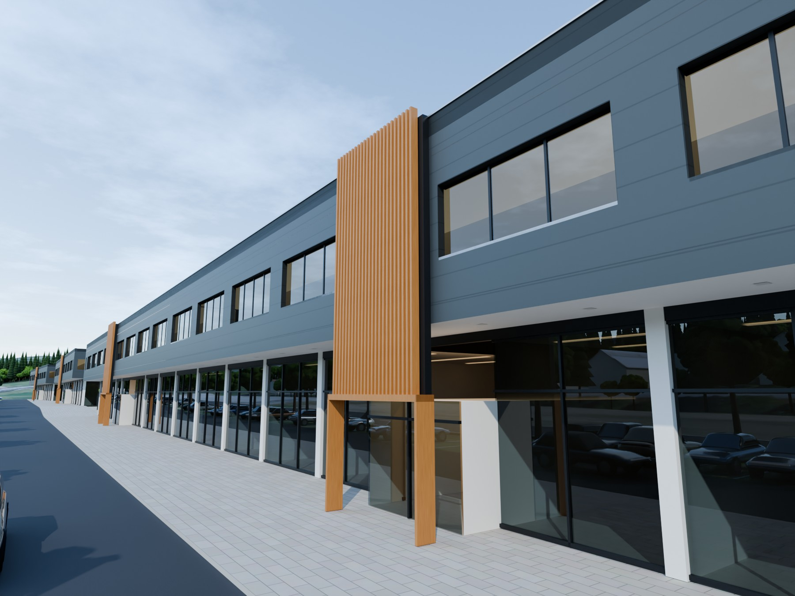
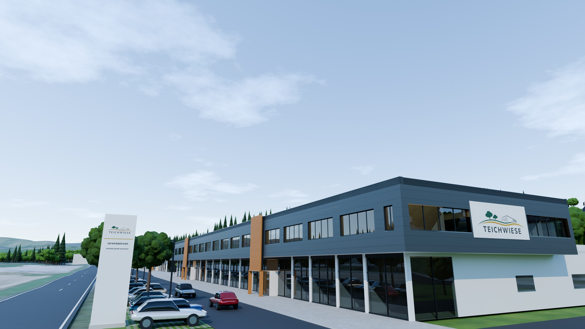
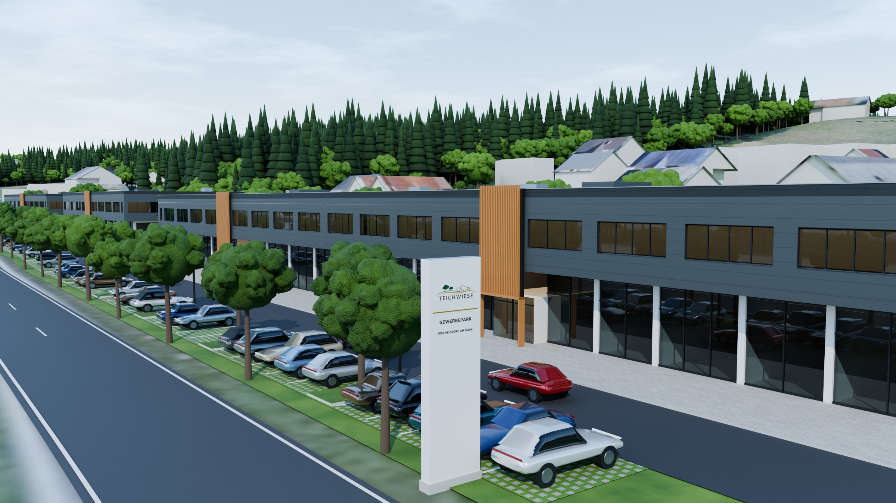
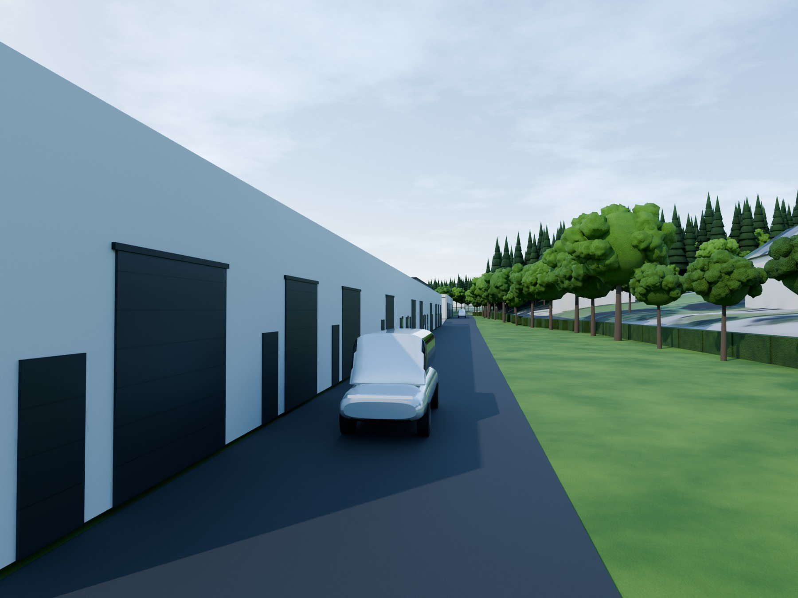
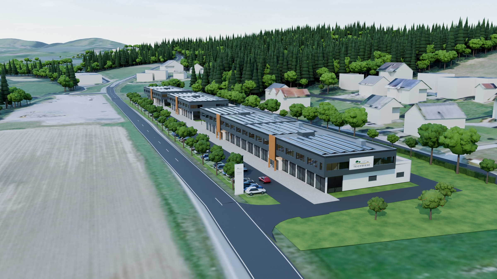
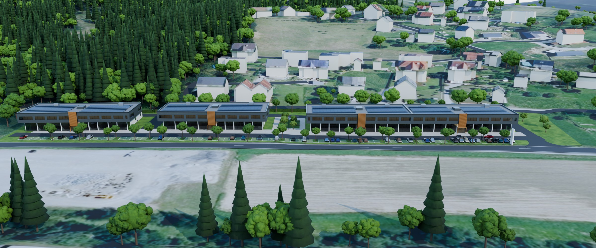
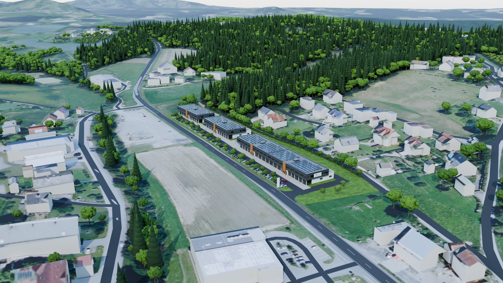
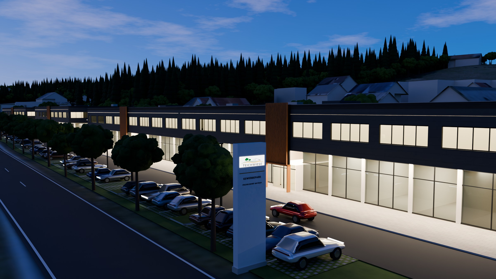

Geschäft & Ausstellung
Erdgeschossräume mit großen Schaufenstern. Im Entwurf u. a. rund 84, 144 und 188 m², mit separaten Lagerräumen an der Rückseite.
 Gewerbepark Pischelsdorf am Kulm
Gewerbepark Pischelsdorf am Kulm

Gemeinsam mehr bewegen – direkt an der B54 in Pischelsdorf am Kulm.
Visualisierung nach Entwurf 3 · keine Zusage zu Ausführung oder Ausstattung
Teichwiese · Gewerbepark in Pischelsdorf am Kulm
Direkt an der stark befahrenen B54 ist Ihr Betrieb dort, wo potenzielle Kundinnen und Kunden täglich vorbeikommen – und wo künftige Mitarbeiterinnen und Mitarbeiter auf Sie aufmerksam werden.
Karl Strametz plant hier einen Gewerbepark für kleine und mittlere Unternehmen. Entstehen sollen Räume für Geschäft, Büro und Dienstleistungen sowie Lagerflächen und Großgaragen, die auch zusätzlich zur eigenen Fläche angemietet werden können. Die Aufteilung ist variabel und wird nach Bedarf organisiert.
Raum für Ihr Vorhaben
Der Entwurf verbindet verglaste Erdgeschossflächen mit Kundenkontakt und ruhigere Räume im Obergeschoss. Die Werte beschreiben Räume im Plan, keine bestätigten Mieteinheiten.
Früh dabei, passend geplant. Wer sein Interesse früh meldet, bei dem kann in der laufenden Planung noch auf Raumgröße und Bedarf eingegangen werden.

Erdgeschossräume mit großen Schaufenstern. Im Entwurf u. a. rund 84, 144 und 188 m², mit separaten Lagerräumen an der Rückseite.

Im Obergeschoss zahlreiche Büroräume von rund 44 bis 47 m² und Eckräume mit rund 64 m², erschlossen über einen Mittelgang.

Lagerflächen und Großgaragen – eigenständig oder zusätzlich zu Ihrer Geschäfts- oder Bürofläche anmietbar. Die Einteilung richtet sich nach dem Bedarf.

Dienstleistung, Praxis oder Werkstattnahes auf Anfrage. Eignung, Zusammenlegungen und Ausbau werden gemeinsam geprüft.
Was die Teichwiese ausmacht
Direkt an der B54, im Umfeld bestehender Einkaufsangebote in Pischelsdorf.
Verglaste Erdgeschosszone zur stark befahrenen Straße, darüber eine ruhige, klare Fassade.
Raumgrößen und Zusammenlegungen werden am tatsächlichen Bedarf ausgerichtet.
Betriebe können sich empfehlen, gemeinsam sichtbar werden und Angebote entwickeln.
3D-Modell
Drehen, zoomen und die vier Bauteile in ihrer Umgebung erkunden.
Vereinfachtes Modell nach Entwurf 3. Bauteile 3 und 4 im gleichen Gebäudetyp angenommen; Außenanlagen, Stellplätze und Zufahrten sind schematisch.
Gemeinsam mehr anbieten
Die Teichwiese soll Raum für Verbindungen schaffen. Die Beispiele zeigen das Prinzip, keine bestehenden Zusagen.
Angedacht ist ein Kompetenzzentrum rund ums Gebäude: von Planung über Interieur und Exterieur bis zur Gartengestaltung – Gewerke rund ums Bauen und Wohnen an einem Ort.
Offen für Büros und Dienstleister aller Art – von IT und Buchhaltung über Beratung bis zu Gestaltung und Service.
Regionale Betriebe präsentieren sich gemeinsam, empfehlen einander und profitieren voneinander.
Einblicke



Stand und nächste Schritte
Häufige Fragen
Der aktuelle Entwurf zeigt Geschäftsräume im Erdgeschoss und Büroräume im Obergeschoss. Vermietbare Einheiten, Größen und Preise werden noch festgelegt.
Geplant sind Lagerflächen und Großgaragen, die auch zusätzlich zu einer Geschäfts- oder Bürofläche angemietet werden können. Größen und Konditionen werden noch festgelegt.
Solange die Räume noch geplant werden, kann auf Größe und Bedarf eingegangen werden. Je früher Sie Ihr Interesse melden, desto besser.
Vorgesehen sind Geschäft, Büro, Dienstleistungen sowie Lager und Garagen. Andere Nutzungen prüfen wir gern im Gespräch.
Ein Termin steht noch nicht fest. Wir informieren, sobald der Zeitplan bestätigt ist.
Nein. Sie hilft, Räume und Nachbarschaft am tatsächlichen Bedarf auszurichten, und ist keine Reservierung.
Interesse anmelden
Ohne lange Texte: Tippen Sie an, was zutrifft, und hinterlassen Sie Telefonnummer oder E-Mail-Adresse. Wir melden uns bei Ihnen.
Karl Strametz
Projektinitiator
Telefon und E-Mail folgen nach Freigabe.